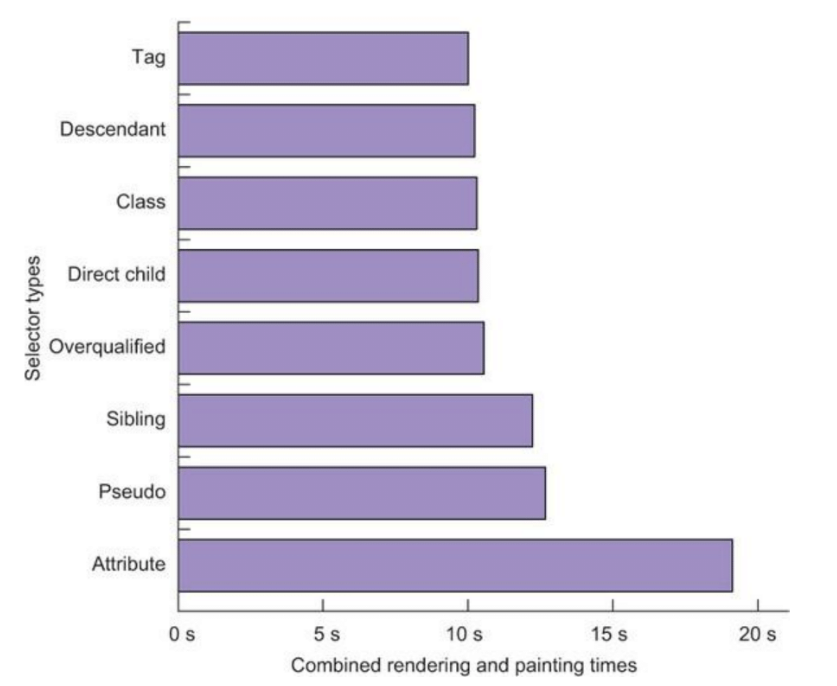

Для конвертации: npm i -g ttf2eot ttf2woff ttf2woff2
@font-face cascade
@font-face { font-family: "Open Sans Light"; font-weight: 300; font-style: normal; src: local("Open Sans Extra Light"), local("OpenSans-Light"), url("open-sans/OpenSans-Light.woff2") format("woff2"), url("open-sans/OpenSans-Light.woff") format("woff"), url("open-sans/OpenSans-Light.eot") format("embedded-opentype"), url("open-sans/OpenSans-Light.ttf") format("truetype");}
Загрузка шрифтов
FOIT (Flash of Invisible Text) — «мелькание невидимого текста»
FOUT (Flash of Unstyled Text) — «мелькание неоформленного текста»
Internet Explorer и Edge используют FOUT и отображают запасные шрифты, пока веб-шрифт не закончит свою
загрузку. Все остальные браузеры используют FOIT и прячут текст во время загрузки веб-шрифтов.
font-display
auto — обычно это поведение block
block — короткий период блокировки (3 секунды) и бесконечный период замены
swap — короткий период блокировки (3 секунды) и бесконечный период замены
fallback — очень короткий период блокировки (100 мс или меньше) и короткий период замены (3 секунды)
optional — очень короткий период блокировки (100 мс или меньше) и период замены в 0 секунды.
Выполнение JS
async
defer
CSS
DRY (don’t repeat yourself).
Писать сокращенными правилами (padding, margin, font).
Не усложнять селекторы, чем вложенность меньше, тем лучше ( <= 3 ).
Грузить только те стили, которые нужны на конкретной странице.
Стараться не использовать @import в CSS (именно в CSS).
<link> должны быть в <head>.
CSS transition быстрее, чем Query animate().
The performance of the CSS selector

Этапы рендеринга CSS-свойств
BRO: transform, opacity и filter - пропускают этапы Layout и Paint, обработаны напрямую через GPU.
Пишут что у
Google mod_pagespeed и Cloudflare нет конфликтов
Админы нужны.
CDN
Стоит отказаться от доменного шардинга. Такой способ распределения множества файлов по различным доменам и CDN актуален для HTTP 1.1, так как решает проблему параллельных соединений. Но в случае с новым протоколом такое решение ухудшает производительность и нивелирует приоритизацию трафика..